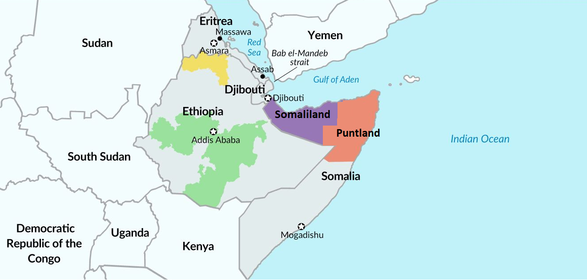

Research · Policy · Regional Futures
Evidence and foresight for a resilient Horn of Africa.
We examine the forces shaping the region, develop practical policy options, and connect rigorous analysis with consequential decisions.
Our purpose
Turn regional knowledge, data, and strategic analysis into policies that strengthen peace, prosperity, and resilience.The Institute
A platform for serious regional inquiry
The Horn of Africa Institute is an independent research, policy, and public-engagement organization based in the United States and focused on the Horn of Africa. We study interconnected questions of security, governance, economic development, climate resilience, and technological change.
Our work combines regional knowledge with qualitative research, quantitative analysis, computational modeling, and structured engagement. The objective is clear: produce useful evidence, clarify strategic choices, and support decisions grounded in regional realities.
Read about our approach →Core programs
Four connected fields of work
Conflict and Stability
Conflict systems, security institutions, terrorism, regional security, maritime security, and pathways to durable peace.
Explore program → 02Economic Development
Governance, public institutions, financial systems, regional integration, infrastructure, and digital transformation.
Explore program → 03Climate Resilience
Climate security, water systems, drought preparedness, environmental sustainability, and community adaptation.
Explore program → 04Foresight Lab
Machine learning, causal analysis, geospatial intelligence, scenario design, simulation, and early-warning systems.
Enter the Lab →How we work
Regional insight strengthened by analytical depth
Complex regional problems require more than a single method. We combine historical and institutional analysis with field-informed research, data science, causal reasoning, geospatial tools, and scenario modeling.
Regional perspective
A strategically connected region
The Horn of Africa links the Red Sea, Gulf of Aden, Indian Ocean, Nile Basin, and the interior of East Africa. Political, economic, environmental, and security developments therefore travel across borders and policy sectors.

Work with us